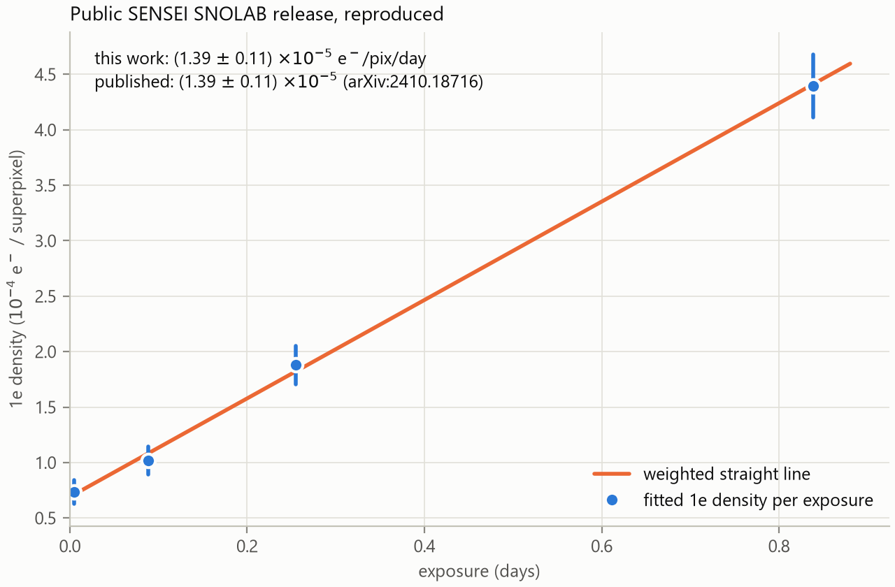
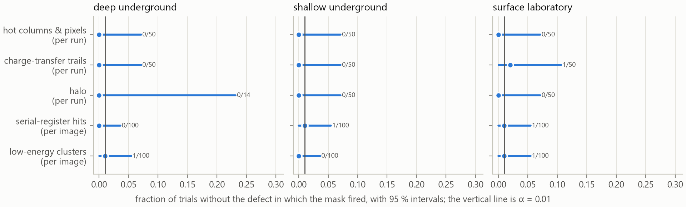
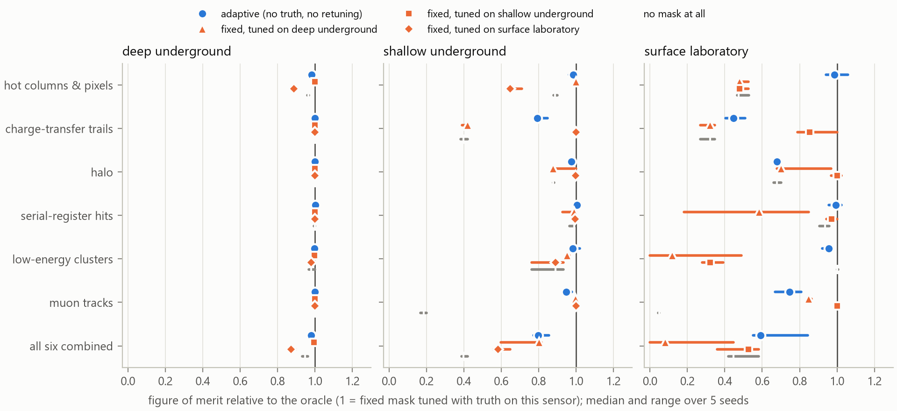

Masks that calibrate themselves
Can the pixel masks of Skipper-CCD analyses do their job without being tuned to the particular sensor they run on?
Short answer, from simulations of three different sensors (5 independent seeds). Of the 28 cases in which a mask tuned by hand on one sensor was moved unchanged to another, 6 ended up worse than applying no mask at all and 4 were no better than no mask. The worst was low-energy clusters on the surface laboratory sensor (tuned on deep underground), at 0.12 of the oracle where doing nothing scores 1.00.
The same masks written as procedures that calibrate themselves were never worse than no mask (1 of 14 cases), with a median 0.98 of the oracle tuned with truth on that same sensor and a worst case of 0.45 (charge-transfer trails on the surface laboratory sensor (adaptive)). Self-calibration does cost something against a mask tuned for the sensor at hand: the best transplanted mask beat it in 8 cases.
On sensors without the defect they target, the adaptive masks fired at the rate they were built for.
On the 2 seeds run once after the code was frozen and never used to change anything: 6 of 26 transplanted cases worse than no mask, 0 of 13 adaptive ones, and a median adaptive 0.98 of the oracle.
The question
A Skipper-CCD counts single electrons in millions of pixels. Before any physics is extracted, analyses discard pixels with masks, each aimed at one problem: charge left behind during transfer, hits in the serial register, hot columns and pixels, photons emitted around high-energy tracks (the halo), clusters of low-energy events, and muons. Every mask has sizes and thresholds — a radius, a trail length, a rate cut — chosen by hand for one sensor, readout and site.
The working hypothesis: what transfers between sensors is not the numbers but the procedure used to choose them. So each mask was written twice: a fixed form with hand-set constants, and an adaptive form that measures its own sizes on the images it is applied to and sets its threshold by a false-positive rate (α = 0.01, corrected for the number of tests) or by measurable physical properties of the sensor.
| Mask | Fixed form | Adaptive form |
|---|---|---|
| Hot columns & pixels | column rate above k × median | Poisson tail of each column's count against its own exposure, Bonferroni over columns, single columns before groups |
| Charge-transfer trails | L pixels after every bright pixel | downstream vs. upstream excess of single electrons around the same bright pixel (binomial); symmetric sources cancel |
| Halo | disc of radius R around bright pixels | each annulus against everything outside it (conditional binomial); no far field needed |
| Serial-register hits | rows with n charged pixels in a window of w | densest window of each row against the image's own occupancy, at several widths |
| Low-energy clusters | disc around events with ≥ m neighbours | neighbours within r against a Poisson count for the local valid area, at several radii |
| Muon tracks | charge and length cuts | charge of a minimum-ionising track for the measured length and this sensor's thickness; straight, piled-up or cut by the border |
How it was tested
A simulator that remembers where every electron came from
Each source of charge fills its own map, so a mask can be scored against exactly the events it should remove. Three sensors differ the way real deployments do. Their geometry, noise, dark rates, background rates and muon fluxes come from public measurements (SENSEI at SNOLAB and MINOS, Oscura sensors at the surface, SNO, PDG); defect populations are not published in a transferable form and are scenario values chosen to differ between sensors.
| Sensor | Pixels | Thickness (µm) | Noise (e−) | Exposure | Dark rate (e−/pix/day) | Muons (cm−2 day−1) | High-E (dru) | Halo µm / trail px / hot cols |
|---|---|---|---|---|---|---|---|---|
| Deep underground | 3072 × 512 | 665 | 0.14 | 20 h | 1.4 × 10-5 | 2.9e-05 | 50 | 100 / 30 / 4 |
| Shallow underground | 3072 × 443 | 675 | 0.14 | 20 h | 1.6 × 10-4 | 6.9 | 3.37e+03 | 150 / 60 / 10 |
| Surface laboratory | 1278 × 1058 | 725 | 0.17 | 1 h | 3.0 × 10-2 | 1.4e+03 | 3e+04 | 250 / 100 / 25 |
Three versions of every mask were compared on an independent test stack of each sensor: the oracle (fixed form tuned with the simulator's truth on that sensor), the transplant (the oracle constants of a different sensor) and the adaptive form, calibrated without truth. The figure of merit is S/√(S+B): surviving injected signal against surviving target background.
A check against real images
Before relying on anything, the public SENSEI SNOLAB data release was read and its single-electron rate reproduced: 1.39 × 10-5 ± 1.1 × 10-6 e−/pix/day against the published 1.39 × 10-5 ± 1.1 × 10-6 (pull -0.02).

Which bit of the public mask is which (geometric check)
The release names its masks but not their bits. Each mask leaves a signature independent of its parameters; the bit order was checked against them. The noisy-row bit never appears in the active area, so it is not verified.
| Bit | Name (hypothesis) | Fraction in whole columns | Bright pixel upstream / only downstream | Median distance to >100 e (px) |
|---|---|---|---|---|
| 0x1 | neighbour | 0.06 | 0.15 / 0.06 | inf |
| 0x4 | bleeding | 0.05 | 1.00 / 0.00 | 104 |
| 0x8 | halo | 0.00 | 0.20 / 0.18 | 51 |
| 0x10 | crosstalk | 0.01 | 0.07 / 0.00 | inf |
| 0x40 | edge | 1.00 | 0.02 / 0.04 | inf |
| 0x200 | bad pixel | 0.00 | 0.04 / 0.01 | inf |
| 0x400 | bad column | 1.00 | 0.04 / 0.02 | inf |
Result 1 · How often the adaptive masks fire when there is nothing to find
50 independent runs of each of the three sensors with every defect the masks look for switched off, keeping what a real sensor cannot switch off: dark current, spurious charge, the injected signal, muon tracks and high-energy deposits. The stack-calibrated masks decide once per run of 2 images; the others decide per image. The test is two-sided, so a mask that is far more conservative than α is visible as well.

| Sensor | Adaptive mask | Unit | Fired / trials | Rate | 95 % interval | Against α |
|---|---|---|---|---|---|---|
| Deep underground | Hot columns | per run | 0 / 50 | 0.000 | [0.000, 0.071] | contains α |
| Deep underground | Charge-transfer trails | per run | 0 / 50 | 0.000 | [0.000, 0.071] | contains α |
| Deep underground | Halo | per run | 0 / 14 | 0.000 | [0.000, 0.232] | contains α |
| Deep underground | Serial-register hits | per image | 0 / 100 | 0.000 | [0.000, 0.036] | contains α |
| Deep underground | Low-energy clusters | per image | 1 / 100 | 0.010 | [0.000, 0.054] | contains α |
| Shallow underground | Hot columns | per run | 0 / 50 | 0.000 | [0.000, 0.071] | contains α |
| Shallow underground | Charge-transfer trails | per run | 0 / 50 | 0.000 | [0.000, 0.071] | contains α |
| Shallow underground | Halo | per run | 0 / 50 | 0.000 | [0.000, 0.071] | contains α |
| Shallow underground | Serial-register hits | per image | 1 / 100 | 0.010 | [0.000, 0.054] | contains α |
| Shallow underground | Low-energy clusters | per image | 0 / 100 | 0.000 | [0.000, 0.036] | contains α |
| Surface laboratory | Hot columns | per run | 0 / 50 | 0.000 | [0.000, 0.071] | contains α |
| Surface laboratory | Charge-transfer trails | per run | 1 / 50 | 0.020 | [0.001, 0.106] | contains α |
| Surface laboratory | Halo | per run | 0 / 50 | 0.000 | [0.000, 0.071] | contains α |
| Surface laboratory | Serial-register hits | per image | 1 / 100 | 0.010 | [0.000, 0.054] | contains α |
| Surface laboratory | Low-energy clusters | per image | 1 / 100 | 0.010 | [0.000, 0.054] | contains α |
Result 2 · Transplanted constants can fail badly; self-calibration does not

| Evaluated on | Mask | Target events | No mask | Adaptive | Fixed, tuned on deep | Fixed, tuned on shallow | Fixed, tuned on surface |
|---|---|---|---|---|---|---|---|
| Deep underground | Hot columns & pixels | 59 | 0.97 (0.96–0.97) | 0.98 (0.98–0.99) | oracle = 1 | 1.00 (1.00–1.00) | 0.89 (0.88–0.90) |
| Deep underground | Charge-transfer trails | 0 too few to compare | 1.00 (1.00–1.00) | 1.00 (1.00–1.00) | oracle = 1 | 1.00 (1.00–1.00) | 1.00 (1.00–1.00) |
| Deep underground | Halo | 0 too few to compare | 1.00 (1.00–1.00) | 1.00 (1.00–1.00) | oracle = 1 | 1.00 (1.00–1.00) | 1.00 (1.00–1.00) |
| Deep underground | Serial-register hits | 3 too few to compare | 1.00 (0.99–1.00) | 1.00 (1.00–1.00) | oracle = 1 | 1.00 (1.00–1.00) | 1.00 (1.00–1.00) |
| Deep underground | Low-energy clusters | 25 | 0.98 (0.97–1.00) | 1.00 (0.99–1.00) | oracle = 1 | 1.00 (0.99–1.00) | 0.98 (0.97–1.00) |
| Deep underground | Muon tracks | 0 too few to compare | 1.00 (1.00–1.00) | 1.00 (1.00–1.00) | oracle = 1 | 1.00 (1.00–1.00) | 1.00 (1.00–1.00) |
| Deep underground | All six combined | 81 | 0.95 (0.93–0.96) | 0.98 (0.98–0.99) | oracle = 1 | 1.00 (0.99–1.00) | 0.87 (0.86–0.90) |
| Shallow underground | Hot columns & pixels | 176 | 0.89 (0.88–0.90) | 0.98 (0.96–1.00) | 1.00 (1.00–1.00) | oracle = 1 | 0.65 (0.63–0.71) |
| Shallow underground | Charge-transfer trails | 3237 | 0.40 (0.38–0.42) | 0.79 (0.78–0.85) | 0.42 (0.39–0.42) | oracle = 1 | 1.00 (0.99–1.00) |
| Shallow underground | Halo | 211 | 0.88 (0.88–0.88) | 0.97 (0.97–0.99) | 0.88 (0.88–1.00) | oracle = 1 | 1.00 (0.99–1.00) |
| Shallow underground | Serial-register hits | 24 | 0.99 (0.96–0.99) | 1.01 (1.00–1.01) | 0.99 (0.93–1.00) | oracle = 1 | 1.00 (0.99–1.01) |
| Shallow underground | Low-energy clusters | 176 | 0.89 (0.76–0.93) | 0.98 (0.96–1.02) | 0.95 (0.94–0.97) | oracle = 1 | 0.89 (0.76–0.93) |
| Shallow underground | Muon tracks | 14116 | 0.19 (0.17–0.20) | 0.95 (0.94–0.98) | 1.00 (0.99–1.00) | oracle = 1 | 1.00 (1.00–1.00) |
| Shallow underground | All six combined | 4093 | 0.40 (0.39–0.42) | 0.80 (0.77–0.86) | 0.80 (0.60–0.81) | oracle = 1 | 0.58 (0.56–0.65) |
| Surface laboratory | Hot columns & pixels | 1657 | 0.47 (0.47–0.53) | 0.99 (0.94–1.06) | 0.48 (0.47–0.53) | 0.48 (0.47–0.53) | oracle = 1 |
| Surface laboratory | Charge-transfer trails | 66249 | 0.32 (0.27–0.35) | 0.45 (0.41–0.51) | 0.32 (0.27–0.35) | 0.85 (0.79–1.00) | oracle = 1 |
| Surface laboratory | Halo | 2049 | 0.68 (0.66–0.70) | 0.68 (0.66–0.70) | 0.70 (0.68–0.97) | 1.00 (0.97–1.02) | oracle = 1 |
| Surface laboratory | Serial-register hits | 76 | 0.94 (0.91–0.96) | 0.99 (0.96–1.02) | 0.59 (0.18–0.85) | 0.97 (0.94–1.00) | oracle = 1 |
| Surface laboratory | Low-energy clusters | 41 | 1.00 (1.00–1.01) | 0.96 (0.92–0.97) | 0.12 (0.00–0.49) | 0.32 (0.28–0.39) | oracle = 1 |
| Surface laboratory | Muon tracks | 175494 | 0.05 (0.04–0.05) | 0.75 (0.67–0.81) | 0.85 (0.84–0.86) | 1.00 (1.00–1.00) | oracle = 1 |
| Surface laboratory | All six combined | 70035 | 0.45 (0.42–0.58) | 0.59 (0.55–0.84) | 0.08 (0.00–0.45) | 0.53 (0.36–0.58) | oracle = 1 |
What the adaptive masks measured on each sensor
| Sensor | Seed | Trail length h / v (px) | Halo radius (px) | Halo calibrated | Hot columns found | Hot columns simulated |
|---|---|---|---|---|---|---|
| Deep underground | seed_20260915 | 0 / 0 | 0 | yes | 0 | 4 |
| Shallow underground | seed_20260915 | 140 / 55 | 10 | yes | 3 | 10 |
| Surface laboratory | seed_20260915 | 130 / 95 | 0 | yes | 25 | 25 |
| Deep underground | seed_20260916 | 0 / 0 | 0 | no | 0 | 4 |
| Shallow underground | seed_20260916 | 125 / 60 | 10 | yes | 7 | 10 |
| Surface laboratory | seed_20260916 | 130 / 85 | 0 | yes | 25 | 25 |
| Deep underground | seed_20260917 | 0 / 0 | 0 | yes | 2 | 4 |
| Shallow underground | seed_20260917 | 140 / 50 | 10 | yes | 7 | 10 |
| Surface laboratory | seed_20260917 | 115 / 80 | 0 | yes | 27 | 25 |
| Deep underground | seed_20260920 | 0 / 0 | 0 | yes | 1 | 4 |
| Shallow underground | seed_20260920 | 140 / 55 | 15 | yes | 10 | 10 |
| Surface laboratory | seed_20260920 | 130 / 95 | 0 | yes | 25 | 25 |
| Deep underground | seed_20260921 | 0 / 0 | 0 | yes | 2 | 4 |
| Shallow underground | seed_20260921 | 150 / 50 | 10 | yes | 5 | 10 |
| Surface laboratory | seed_20260921 | 105 / 85 | 0 | yes | 31 | 25 |
What the checks caught
Every error below was found by a test or a diagnostic against the simulator's truth, fixed, and recorded.
- The simulator redrew hot columns in every image, which would have invalidated every calibration on a stack.
- The hot-column mask flagged the innocent neighbours of each hot column (17 of them in a test).
- The halo test treated its reference rate as exact; a 4σ fluctuation gave a halo where there was none.
- At the surface no pixel is far from every muon track: the first halo calibration fell back to its largest radius and masked the whole image. It now compares each annulus with everything outside it.
- Crossing muons merged into wide clusters that the track criterion rejected (24 % of muon pixels missed); tracks cut by the image border were missed too.
- Hot columns were calibrated before charge-transfer trails, whose vertical trails from muons made 69 of 81 flagged columns false.
- In one seed the halo radius, chosen by significance alone, reached 125 px on the surface sensor and masked 99.9 % of the image. The radius now maximises a figure of merit estimated from the data within the significant range; all seeds were re-run, plus two seeds never used during development.
Limitations
- Defect populations (hot columns, trail lengths, serial hits, clusters) are scenario values, not measurements.
- One figure of merit; the oracle is tuned mask by mask, not jointly, so a combined adaptive mask can exceed it.
- Adaptive trail lengths are limited by the number of bright pixels in the calibration stack: they are short when data are few.
- The muon figure of merit counts pixels, which weighs every missed track pixel heavily.
- An adaptive mask cannot tell injected signal from dark current, so it estimates signal as every uniform single electron; the evaluation counts only the injected signal. At the surface, where dark current is ~20 times the signal, the adaptive halo therefore chooses not to mask and reaches ~0.7 of the oracle. The evaluation was fixed before this was seen and was not changed.
- The adaptive masks were not yet run on the real public images beyond the rate reproduction.
Reproduce
conda env create -f environment.yml
conda activate skmask
python scripts/fetch_public_data.py
pytest
python analysis/reproduce_release_rate.py
python analysis/check_release_mask_bits.py
python analysis/null_false_positive_rates.py
python analysis/compare_masks_across_sensors.py 4 --seed 20260915
python analysis/figure_compare_masks.py
python analysis/build_report.py
python scripts/make_pdf.pyEvery output has a .provenance.json sidecar with the script, git commit, input hashes, parameters and seed;
PROVENANCE.md says how each result was checked.